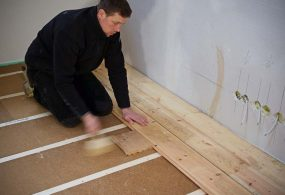

Vloerisolatie houtvezelplaat van Steico
Houtvezelplaat is erg geschikt als isolatiemateriaal en zeer milieuvriendelijk. Het materiaal is een afvalproduct uit de houtindustrie. Het laat lucht door en heeft een vochtregulerende werking.
Het is daarom uitermate geschikt als isolatiemateriaal zonder dampremmende laag of extra folie tegen vocht. Het opgenomen vocht wordt namelijk heel geleidelijk afgegeven en beïnvloedt daardoor de luchtvochtigheid nauwelijks.
Houtvezel vergaat niet en kan bovendien telkens opnieuw gebruikt worden. Het is dus een onderhoudsvrij isolatiemateriaal.
| Toepassing | Boven/onderzijde vloer/wand/dak, hout of beton |
| Materiaal | Houtvezel |
| Certificaat | ISSO, FSC, Nature plus, Din |
| Doe het zelf | Eenvoudig zelf te doen |
| Subsidie mogelijk | Ja, ISDE bij R-waarde van 3,5, |
| λ(U)-waarde | 0,038 W/m2K |
Geen geluidsbruggen dankzij een mechanische bevestiging
Isoleert zowel thermisch als akoestisch
Bijzonder waterdampdoorlatend
Snelle en eenvoudige plaatsing
Brengt een gezonde levenssfeer en een natuurlijk wooncomfort
Vochtregulerend dankzij een hoge absorptiecapaciteit
Ecologisch, milieuvriendelijk, recycleerbaar
Vergelijk meer producten
Dakisolatie
Platdakisolatie IKO EnerthermGeluid
Binnenwandsysteem HV70 Van FaayEco-Baffles Van VRK
Geluidisolatie Isolgomma Van Imbema
Gevel
BuitenisolatiegevelHoutvezelisolatie Van Gutex
Isolatie Isovlas PL Plaat
Spouwisolatie HR++ Neopixels EPS Parels
Glas
Glasfolie van HomechillHR++ Isolatieglas
Renovatieglas en Kozijnen
Vloer
Bodem afsluiting KalkkorrelsReflectiefolie Tonzon